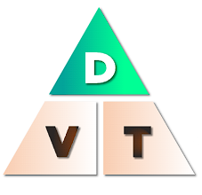
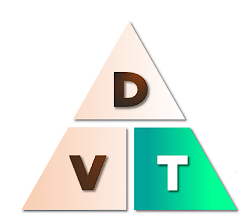
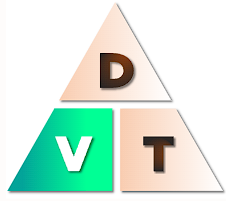

Fórmulas en M.R.U
Existen distintas maneras de encontrar una solución a un problema de M.R.U. Para ello se utilizan diferentes fórmulas, y aquí las vamos a mostrar.
Las fórmulas características en M.R.U son:
Fórmula para hallar la distancia:
-Se puede calcular la distancia recorrida por un objeto, dada una velocidad constante durante un tiempo dado.

Distancia=tiempo*velocidad
Fórmula para hallar el tiempo:
-El tiempo requerido para desplazarse, se puede calcular dada una velocidad constante y una distancia.

Tiempo=distancia/velocidad
Fórmula para hallar la velocidad:
-Una velocidad constante se puede calcular dada la distancia y el tiempo que se tardo en recorrerla.

Velocidad=distancia/tiempo